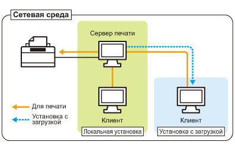

Если принтер используется в среде сервера печати, можно выполнять печать с других компьютеров (клиентов), которые не подключены к данному принтеру непосредственно.
 |
В этом руководстве компьютер, который подключен к принтеру непосредственно, называется "сервер печати", а другие компьютеры, которые используют данные принтер через сервер печати, называются "клиентами".
|

Установление сервера печати также позволяет эффективно управлять принтером.
Например, на сервере печати можно управлять всеми заданиями печати клиентов.
Клиенты могут загружать и устанавливать драйвер принтера с сервера печати. (Компакт-диск для этого не требуется.)
Чтобы использовать принтер в среде сервера печати, выполните любую из следующих задач.
Если компьютер является сервером печати
|
1.
|
Установите драйвер принтера.
|
||
|
2.
|
Настройте сервер печати.
|
Если компьютер является компьютером-клиентом
Установите драйвер принтера.
Существует два способа установить драйвер принтера на компьютеры-клиенты: локальная установка, а также загрузка и установка.
<Локальная установка>
Драйвер принтера можно установить при помощи компакт-диска из комплекта поставки.
<Загрузка и установка>
Драйвер принтера можно установить, не используя компакт-диск из комплекта поставки, — путем загрузки драйвера принтера из сервера печати. Существует два указанных ниже способа загрузки и установки драйвера принтера.
|
ПРИМЕЧАНИЕ
|
||
|
Предупреждения, касающиеся загрузки и установки драйвера принтера
Если сервер печати работает под управлением 64-разрядной операционной системы, загрузка и установка для компьютера-клиента, работающего под управлением любой из перечисленных ниже 32-разрядных операционных систем, не поддерживается в силу ограничений операционной системы Windows.
Windows 2000
Windows XP (если пакет обновления не установлен или установлен пакет обновления SP1)
Windows Server 2003 (если пакет обновления не установлен)
|